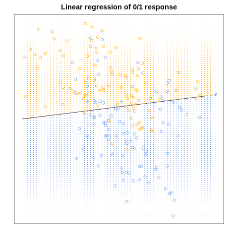
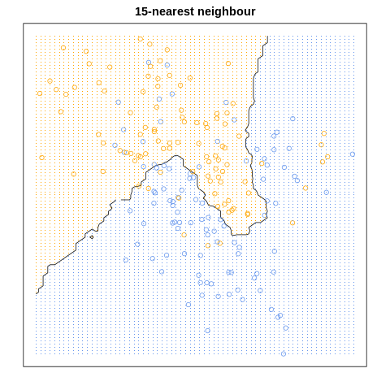
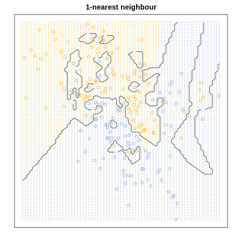

%load_ext rpy2.ipython #讓R可以被用
2.3 Two Simple Approaches to Prediction
機器學習的種類
在機器學習的問題中，我們希望能透過適當的演算方法幫助我們進行客觀或自動的判斷，機器學習的方法可以分為兩大類：「監督式學習」與「非監督式學習」。
- 監督式學習：監督式學習的資料可以想成是一組 \((\bf{X},y)\) 的模式，其中包含我們搜集到的資料 \(\bf{X}\) ，以及我們想要預測的結果 \(y\) 。而 \(y\) 也可以類別資料，此即所稱的分類問題(classification problems)。
- 非監督式學習：非監督式學習的資料只有 \(\bf{X}\) ，我們希望透過這些資料來找出一個脈絡，如分群問題(clustering problems)。
換句話說，監督式學習的分析方法適於於存在「正確解答」的模式，我們可以透過建立「訓練集(training set)」以及「測試集(test set)」來比對訓練的優劣。
基本的預測方法
在 The Elements of Statistical Learning 中的 2.3 節介紹了兩種預測的方法，分別為：「線性迴歸預測」以及「KNN 演算法」。
資料集
在這個資料集的預測變數 \(\bf{X}\) 有兩個變數，而被預測變數 \(Y\) 有兩個分別為橘色與藍色。
我們定義： \[\hat{G}=\left\{ \begin{matrix} {\color{Orange} orange} & , \hat{Y}>0.5\\ {\color{Blue} blue} & , \hat{Y} \leq 0.5 \end{matrix}\right.\]
並且從課本所附的資料集匯入資料：
%%R # 啟用R
#Import data
load(url("https://hastie.su.domains/ElemStatLearn/datasets/ESL.mixture.rda"))
x <- ESL.mixture$x
g <- ESL.mixture$y
xnew <- ESL.mixture$xnew
#grid
px1 <- ESL.mixture$px1
px2 <- ESL.mixture$px2最小平方法
最小平方法希望能找到一條直線(or hyperplane)來分出我們要的資料，可以將這條線寫成： \[ \hat{Y}=X\hat{\beta} \]
因此，我們要找到對應的最佳係數估計 \(\hat{\beta}\)，其運算邏輯為要極小化殘差平方和(residual sum of squares)：
\[ RSS(\beta)= (y - X \beta)^T (y - X \beta)\]
我們可以得到以下結果： \[\hat{\beta }= (X^TX)^{-1}X^Ty\]
在 R 中，我們可以很簡單地使用lm()函數來進行最小平方法的估計。
%%R
linear <- lm(g~x)
linear$coefficients(Intercept) x1 x2
0.3290614 -0.0226360 0.2495983 %%R
#計算期望機率
prob_linear <- linear$coefficients[1] +linear$coefficients[2] * xnew[,1] + linear$coefficients[3] * xnew[,2]
#fit grids
prob_lm <- matrix(prob_linear, length(px1), length(px2))
par(mar=rep(2,4)) #匡出圖片的範圍
contour(px1, px2, prob_lm, levels=0.5, labels="", xlab="", ylab="", main=
"Linear regression of 0/1 response", axes=FALSE)
points(x, col=ifelse(g==1, "orange", "cornflowerblue"))
gd <- expand.grid(x=px1, y=px2)
points(gd, pch=".", cex=1.2, col=ifelse(prob_linear>0.5, "orange", "cornflowerblue"))
box()
KNN 演算法
KNN(K Nearest Neighbors)演算法的觀念相當簡單，也就是找出各資料點最近的 \(k\) 個資料點(k個鄰居)，並且進行投票，當藉此找出該點究竟是誰。
KNN的投票邏輯可以這樣表示： \[ \hat{Y} (x)= \frac{1}{k}\sum_{x_i \in N_k(x)}^{}y_i \]
- 準備好你的樣本，決定一個整數 \(k\)
- 決定與各樣本點最接近的 \(k\) 個樣本點，距離可以有以下選擇：
- 歐式距離(Euclidean distance)：\(d(x,x_i)=\sqrt{(x-x_i)^T(x-x_i)}\)
- 曼哈頓距離(Manhattan distance)： \(d(x,x_i)=\sum_1^j|x_j-x_{ij}|\)
- 明氏距離(Minkowski distance)：\(d(x,x_i)=(\sum_{s=1}^j|x_j-x_{ij}|^p)^{\frac{1}{p}}\)
- 開始投票！看鄰居是哪種類的資料最多，則該資料點 \(x\) 就會被分到該類別。
KNN 演算法也要注意儘量選擇奇數的\(k\)，藉此避免平手，而最適合的\(k\)可透過訓練集測試集的比對來找尋，也就是測試 k=1, k=2, …。在高維度的資料中，KNN的表現也可能不好。
在 R 語言，我們需要使用class套件來呼叫knn()函式，即可進行KNN演算法的運算。
%%R
#KNN function
library(class) #Knn
#knn(train, test, cl, k = 1, l = 0, prob = FALSE, use.all = TRUE)
mod15 <- knn(x, xnew, g, k=15, prob=TRUE)%%R
prob <- attr(mod15, "prob")
prob <- ifelse(mod15=="1", prob, 1-prob)
px1 <- ESL.mixture$px1
px2 <- ESL.mixture$px2
prob15 <- matrix(prob, length(px1), length(px2))
par(mar=rep(2,4))
contour(px1, px2, prob15, levels=0.5, labels="", xlab="", ylab="", main=
"15-nearest neighbour", axes=FALSE)
points(x, col=ifelse(g==1, "orange", "cornflowerblue"))
gd <- expand.grid(x=px1, y=px2)
points(gd, pch=".", cex=1.2, col=ifelse(prob15>0.5, "orange", "cornflowerblue"))
box()
而我們也可來看看一個極端的例子，也就是當 \(k=1\) 時，模仿上面的方法，我們可得到下圖：
%%R
#1nn
mod1 <- knn(x, xnew, g, k=1, prob=TRUE)
prob <- attr(mod1, "prob")
prob <- ifelse(mod1=="1", prob, 1-prob)
px1 <- ESL.mixture$px1
px2 <- ESL.mixture$px2
prob1 <- matrix(prob, length(px1), length(px2))
par(mar=rep(2,4))
contour(px1, px2, prob1, levels=0.5, labels="", xlab="", ylab="", main=
"1-nearest neighbour", axes=FALSE)
points(x, col=ifelse(g==1, "orange", "cornflowerblue"))
gd <- expand.grid(x=px1, y=px2)
points(gd, pch=".", cex=1.2, col=ifelse(prob15>0.5, "orange", "cornflowerblue"))
box()
我們可以統整 KNN 演算法為有 \(N/k\) 個參數(parameters)，可以想成此分群共有 \(N/k\) 個區域也就是如同要決定\(N/k\)中心點一般。
Bayes Classifier
https://esl.hohoweiya.xyz/02-Overview-of-Supervised-Learning/2.4-Statistical-Decision-Theory/index.html
https://www.cs.cmu.edu/~tom/mlbook/NBayesLogReg.pdf
https://blog.csdn.net/zejianli/article/details/53857581